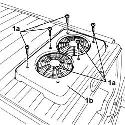
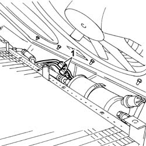
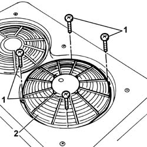

5040A43 ELECTRIC VENTILATOR FOR AIR CONDITIONING CONSENSATOR , LEFT OR RIGHT (ONE) - R.R.
- Path
- Procedures > 50 AUXILIARY UNITS > 5040 AIR CONDITIONING CASING AND COMPONENTS > 5040A CHECKING OPERATION OF AIR CONDITIONER (TEMPERATURE) > 5040A43 ELECTRIC VENTILATOR FOR AIR CONDITIONING CONSENSATOR , LEFT OR RIGHT (ONE) - R.R.
- Kind
- repair procedure (removal / refitting; the operation number is the code)
- Applies to
- all engines; all production periods
- Interactive page
- https://sloeber94.github.io/elrnDB-fDct/en/#/244001269
Applies to: all engines; all production periods; only with equipment: Supplementary air conditioner
 Removing
Removing
 Refitting
Refitting- Disconnect the negative battery terminal.
1. Undo the fixing bolts (1a) and remove the condenser cover (1b) at the front.

Applies to: all engines; all production periods; only with equipment: Supplementary air conditioner
1. Disconnect the fan wiring electrical connections.

Applies to: all engines; all production periods; only with equipment: Supplementary air conditioner
1. Undo the bolts fixing the fan to the condenser cover.
2. Remove the fan

Applies to: all engines; all production periods; only with equipment: Supplementary air conditioner
Refitting
Removing- Position the fan in its seat on the condenser cover and tighten the bolts.
- Position the condenser cover and connect the fan electrical connections.
- Position the condenser cover in its seat and tighten the fixing bolts.
- Connect the negative battery terminal.